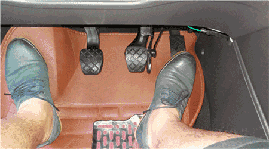
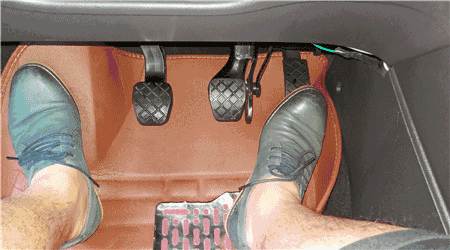
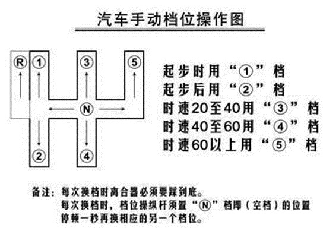
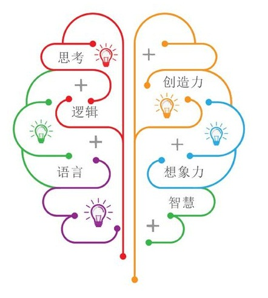

换挡时踩离合要踩到底，注意要松开油门，换挡后慢松离合慢踩油门。 
起步、加速时需要油门踏板，停车减速需要踩刹车，注意脚后跟的位置，切换时并不移动。另外，不操作油门刹车时右脚一律放刹车板上预备。 
3 怎样防止油门当刹车
首先，开车时必须注意力集中，使有情况时能及时发现，发现情况后能及时减速，尽量避免急刹车操作造成忙中出错;
其次，只要不加油或稳油，一定要把右脚移放到刹车板上，这必须成为一种本能。(千万千万，不要养成不加油时把右脚直接放在驾驶室地板上作轻松状的习惯，这样的后果是紧急情况时右脚或找不到或找不准刹车，极易出现误把油门当刹车的情况。
另外，在危险或复杂环境下的起步、倒车等情况下，当出现“错把油门当刹车”的错误，自动档的后果相对地比手动档要严重些。
手动档踩刹车，一般人的条件反应（哪怕是新手也不会忽略这点）是同时踩离合，即使错将油门当刹车了，速度也提不起来，但发动机因空转的怒吼将提醒你踩错了，只要赶紧把右脚移到刹车上，一般不会有严重后果。
自动档就不一样了，错踩后，最初时间内你可能还不知道踩错了，还以为没刹住继续用力踩。这就很严重了，你踩得越重，车子就自动加档提速越高，其结果是车要窜出去好远。
1、正确的踩离合器的姿势是，脚掌蹋在离合器踏板上，脚跟要贴着地面，当离合器踩到最低点时，膝盖要保持微曲。切勿用脚尖踩踏版或脚跟离地，避免力量不够或下滑。
2、踩离合器时，要踩到最低(地板)，避免长时间处于接合状态，这样便可以确保离合器完全分离，不至于磨损。
3、开车时，离合器不要放的太快或刻意将引擎转速提升得过高，这会加速离合器的损耗。
4、永远在踩低离合器时才换挡。
5、踩离合器时，油门应该放开。
6、若手部未能顺利换挡，可以先放开离合器，然后再踩离合器一次，再换挡，切勿强行换挡，否则会让变速箱的齿轮产生摩擦。
7、行车中，切勿右脚踩离合器。
什么时候是换挡的最佳时机？这是很多手动车驾驶者常遇到的问题。很多人以为无声的换挡就是正确的，于是在引擎还未到达最需要换挡的转速时就盲目的换挡，这样倒也未尝不可，只是比较耗油而已。因为转速过低的话，驾驶者必须增加供油量，才能维持正常的力量输出，其实引擎在接近扭力峰值输出的转速行车，是最省油的。
以1.5升排量的家庭用车在平路上行走为例，最理想的换挡时机大致如下：
1挡起步：约1500rpm
1挡转2挡：20km/h
2挡转3挡：30km/h
3挡转4挡：40km/h
4挡转5挡：50km/h
转入抵挡也是一样，不要等转速过低，车辆几乎没有力气才减挡，这样会增加引擎负担。要车辆保持一定的驱动力和速度，减少引擎负担，及早减挡是必要的，特别是上坡、车辆慢速行驶和负重行驶的时候。
一般来说，最佳的换挡时间大致如下：
5挡换4挡：55km/h
4挡换3挡：45km/h
3挡换2挡：35km/h
2挡换1挡：25km/h
(备注：以上数字仅供参考，可因实际情况随机应变。)
在科目三中，使用离合器的时候，一定要记住“快踩慢抬”，防止车辆出现熄火或者冲的情况。踏离合器的时候要快速踏到底，如果是在半联动的状态，直接挂挡很容易磨损离合片。另外起步的时候一定要缓慢抬起，不能猛然松开，不然很有可能直接导致熄火。
在这里需要大家注意的是，如果遇到紧急情况需要刹车时，要离合器与刹车一起踩，这样比较安全也不会容易熄火。
刹车操作技巧：
刹车时要做到“慢踩快抬”，防止急刹车或者熄火。刹车在科目三中主要是减速的作用，当我们经过路口、人行横道、公交车等特殊区域，以及会车、转弯时，我们都需要轻点下刹车。如遇到紧急情况时，要离合与刹车一起踩才不会熄火。此外，停车时要在车辆减速快到停车的时候再踩离合踏板，其他情况只需要踩刹车就可以。
油门操作技巧：
使用油门的时候要记住“慢踩慢抬”，保持车速平稳，防止猛踩油门。油门主要是加速的时候使用的，与刹车一起控制车辆的速度，在科目三考试中，挂挡时一定要先松开油门再踩离合换挡，路过人行道、学校、公交站牌等区域要及时减速，右脚不要踩油门，提前踩刹车减速。
科目三作为驾考的一大考试难点，各位学员一定要掌握好油门、离合、刹车之间的控制，因此建议学员们在平时的练习当中多加学习总结，好好掌握以上福州华威驾校提到的相关方法，一次性顺利通过考试没问题！
驾考科目三的重点难点就是教练一直有提到的油离配合，即油门与离合器的控制配合问题。油门控制需要技巧以及勤加练习，才能游刃自如。而掌握挂挡技巧则可以为路考加不少分，也让驾驶员更加轻松的驾车行驶。今天猪兼强小编就和大家分享一下掌握油门及挂挡的技巧攻略。
1、踩油门的正确姿势
驾驶员脚后跟放在驾驶室的地板上，以此为支点，前脚长踩在油门处，然后使用脚踝关节的力量深浅来控制油门。
2、控制油门的须知事项
（1）首先踩踏油门时，需注意用力柔和，尽量轻踩慢抬。
（2）要适当选择挡位，使得发动机在运作的大部分时间里处于中等转速及较大节气门的姿态，达到节省燃料的目的。
（3）在放松离合器的时候，驾驶员要迅速踩油门与之紧密配合。
（4）车辆在停止行驶或者熄火之前，驾驶员要先放松油门的踏板，不能骤然轰空油门。
3、车辆起步过程油门技巧
（1）车辆启动时，油门不要一脚踩到底，比怠慢油门略微高些最佳。
（2）车辆起步时，在接近离合器联动点时加油门，但油门注意不要过大。
（3）车辆在行进过程中，按道路情况需求适当增大或降少油门。
4、车辆起步的挡位技巧
首先车辆起步应当在一挡，这是驾驶员需要注意的。凡是车辆静止状态到启动状态，挡位必须保持在一挡上。
5、车辆逐级换挡技巧
需知是严禁跳跃换挡的，档位更换必须按照一挡到二挡逐级更换。如若不然，驾考的监控记录仪会拍下，考生将被扣除相应的分数。
6、车辆换挡速度技巧
车辆换挡速度要诀就是一个“快”字。这个十分关键，驾驶员要以迅速完成踩离合、换挡和踩油门的动作。当然换挡除了要快，还要稳，换挡时把离合一脚踩到底。
7、车辆换挡需目视前方
车辆换挡时，驾驶员必须目视前方。毕竟关注路况是驾驶员的要责任之一。
汽车在不停地迭代，从外观到配置，从里到外，可无论配置怎么更新，外观怎么变化，哪怕是从手动挡进化到现在的自动挡，也仅仅只是解放了左脚而已，并且刹车踏板永远会比油门踏板高出一截，这到底是为什么呢？

大家都知道，我们的大脑左右脑分工不同，左脑负责理性、右脑负责感性，而左右脑控制的肢体也刚好相反，左脑控制右侧肢体，右脑控制左侧肢体，因此用左脑控制的右侧肢体来负责换挡、油门刹车会更加稳妥；而右脑控制的左侧肢体则更适合负责单一且机械化的“起合离合器”。但仅仅依靠大脑的逻辑分析运算仍不够稳妥。
肌肉记忆与潜意识
左脑身为理性的存在，其控制的下意识同样会更加精准，所以面对突发情况自然也是右侧躯体反应更为迅速，设计师把需要灵活反应的油门和刹车交给了右脚，把档位交给了右手，也恰恰是因为大脑的这一特性。所谓下意识就是条件反射，面对危险的时候用肌肉记忆应对突发情况。
两个踏板需要的力道与距离相同的话，养成的肌肉记忆也会相似，最终可能会导致急刹车时以相同的力度踏下油门踏板而浑然不觉，而此时车辆的突然加速又会让大脑反应不及，一时陷入懵圈的状态，等到大脑反应过来的时候可能已经迟了。
为了避免这样的情况发生，油门与刹车踏板必须以不同的高度、力度和行程设定，从而养成两套不同的肌肉记忆，对不同的情况有不同的反应。
当然，除了安全，还有油门和刹车本身特性的原因。油门开合度短，位置低更合适。而刹车需要一定的距离来实现行动自由，所以刹车踏板高一些（一般是高2cm）也更有利于刹车的行程。
首先在驾考中自动档跟手动档的考试操作流程都是一样的。但有很多朋友在报名学车的时候都都会有一个困惑，，到底是报手动档呢，还是报自动档好呢？ 下面我们就来分析下这两种车型的区别到底在哪里…
NO1.车型的区别
驾驶手动档车型的一个要点就是控制好离合器，在开车时起步、换档和低速刹车都离不开它。
驾驶自动档车型上的变速箱相当于手动变速器的变速杆，一般有以下几个挡位：P(停车)、R(倒档)、N(空档)、D(前进)、M(手动模式+：手动档模式上升档 -：手动档模式下降档)。
NO2.操作难度的区别
自动档（C2），因为没有离合器踏板，所以在操作起来就不需要控制离合，只有油门踏板和制动踏板（刹车），步骤相对较少，开起来车速更容易控制，科二的半坡起步熄火或者后溜的失误也会大大减少，而同时在科三的时候，路面不用换档，通过率也会更高。
而手动档(C1)就比较繁琐，也比较难掌握。学车第一课就是学会控制离合踏板，因为手动档车辆的驾驶主要就是考离合器的带动。无论加减档，起步，停车都是需要离合器的配合，所以对于新手来说操作起来会比较紧张，而导致出错挂科。
NO3.准驾车型的区别
手动档（C1）驾驶证不仅能驾驶手动档的车，还可以驾驶自动档（C2）的车，但是学自动档驾驶证就只能驾驶自动档车型了。所以拥有C1驾照就相当于多一个选择，以备不时之需时同样能够驾驶手动档的汽车。
总的来说其实这两者都各有各的优势。自动档因为不用控制离合器所以简单易学，比较适合女性，而对于喜欢有操作感的人，手动档更能体会到有驾驶乐趣。所以只能根据不同的需求，来选择学习。